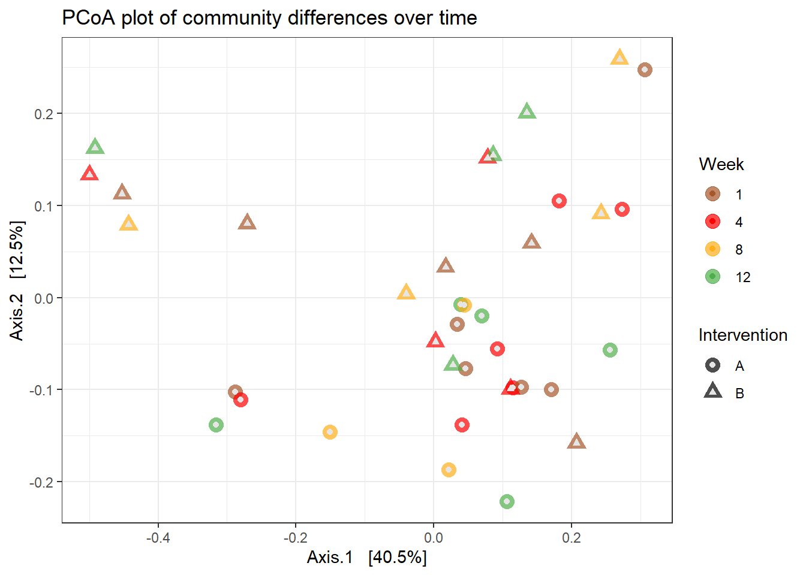
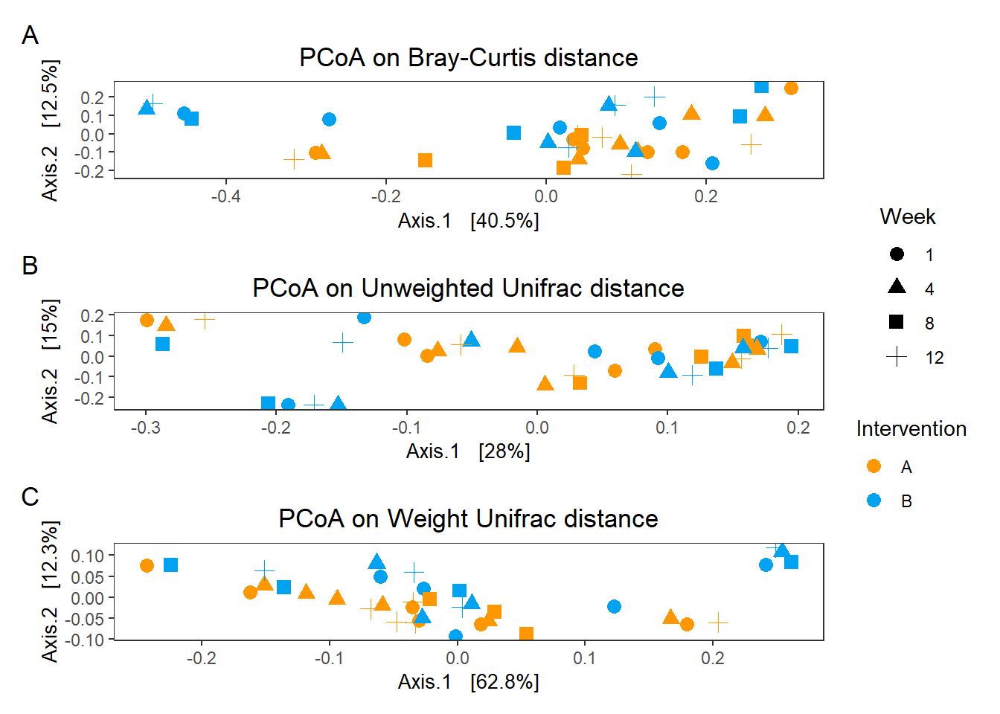

Beta Diversity Analysis
Last updated: 2020-04-16
Checks: 6 1
Knit directory: Fiber_Intervention_Study/
This reproducible R Markdown analysis was created with workflowr (version 1.5.0). The Checks tab describes the reproducibility checks that were applied when the results were created. The Past versions tab lists the development history.
The R Markdown is untracked by Git. To know which version of the R Markdown file created these results, you’ll want to first commit it to the Git repo. If you’re still working on the analysis, you can ignore this warning. When you’re finished, you can run wflow_publish to commit the R Markdown file and build the HTML.
Great job! The global environment was empty. Objects defined in the global environment can affect the analysis in your R Markdown file in unknown ways. For reproduciblity it’s best to always run the code in an empty environment.
The command set.seed(20191210) was run prior to running the code in the R Markdown file. Setting a seed ensures that any results that rely on randomness, e.g. subsampling or permutations, are reproducible.
Great job! Recording the operating system, R version, and package versions is critical for reproducibility.
Nice! There were no cached chunks for this analysis, so you can be confident that you successfully produced the results during this run.
Great job! Using relative paths to the files within your workflowr project makes it easier to run your code on other machines.
Great! You are using Git for version control. Tracking code development and connecting the code version to the results is critical for reproducibility. The version displayed above was the version of the Git repository at the time these results were generated.
Note that you need to be careful to ensure that all relevant files for the analysis have been committed to Git prior to generating the results (you can use wflow_publish or wflow_git_commit). workflowr only checks the R Markdown file, but you know if there are other scripts or data files that it depends on. Below is the status of the Git repository when the results were generated:
Ignored files:
Ignored: .Rhistory
Ignored: .Rproj.user/
Ignored: reference-papers/Dietary_Variables.xlsx
Untracked files:
Untracked: analysis/analysis_anthropometric.Rmd
Untracked: analysis/analysis_beta_diversity.Rmd
Untracked: analysis/change_in_alpha_diversity.Rmd
Untracked: analysis/dietary_intake_figure.Rmd
Untracked: code/Fiber_Microbiome.Diet_Data_Analysis.RMD
Untracked: code/johnson_2019_fig1.R
Untracked: data/analysis-data/
Untracked: data/johnson2019/
Untracked: fig/figure1.pdf
Untracked: fig/figure1_legend.pdf
Unstaged changes:
Modified: .gitignore
Deleted: Fiber_Microbiome.Diet_Data_Analysis.RMD
Modified: analysis/index.Rmd
Modified: analysis/microbiome_food.Rmd
Modified: code/get_cleaned_data.R
Modified: code/get_data.R
Modified: code/load_packages.R
Modified: code/microbiome_statistics_and_functions.R
Note that any generated files, e.g. HTML, png, CSS, etc., are not included in this status report because it is ok for generated content to have uncommitted changes.
There are no past versions. Publish this analysis with wflow_publish() to start tracking its development.
Beta-Diversity
General Ordination Plot
# Ordinate
pcoa <- ordinate(
physeq = phylo_data,
method = "PCoA",
distance = "bray"
)
# Plot
p <- plot_ordination(
physeq = phylo_data,
ordination = pcoa,
color = "Week",
shape = "Intervention",
title = "PCoA plot of community differences over time"
)
p +
geom_point(aes(color = Week), alpha = 0.7, size = 4) +
scale_color_manual(values = c("#a65628", "red", "#ffae19","#4daf4a")) +
geom_point(colour = "grey90", size = 1.5) 
PERMANOVA
Below, we present the permutation based ANOVA results for community differences. We conducted these analyses with three models
- Using Week
- Using Intervention
- Using Week \(\times\) Intervention interaction
Compute the distances matrices and get ordination objects.
# Calculate distance matrices
dist_bray <- phyloseq::distance(phylo_data, method = "bray")
dist_unwt <- phyloseq::distance(phylo_data, method="unifrac", weighted=F)
dist_wt <- phyloseq::distance(phylo_data, method="unifrac", weighted=T)
# plot ordination
ord_bray = ordinate(phylo_data, method="PCoA", distance=dist_bray)
ord_unwt = ordinate(phylo_data, method="PCoA", distance=dist_unwt)
ord_wt = ordinate(phylo_data, method="PCoA", distance=dist_wt)
# sample data
df <- data.frame(sample_data(phylo_data))
# colors
cols <- c("#fe9700","#00a2f2", "#662a00", "#c91acb","grey60","#858c69", "#a8863a", "#737373", "#d43f1f", "#5dd047", "#ffff59")Analysis by Week
p1 <- plot_ordination(phylo_data, ord_bray, color="Week") +
geom_point(size=3) +
scale_colour_manual(values=cols)+
labs(title="PCoA on Bray-Curtis distance, by Week")
p2 <- plot_ordination(phylo_data, ord_unwt, color="Week") +
geom_point(size=3) +
scale_colour_manual(values=cols)+
labs(title="PCoA on Unweighted Unifrac distance, by Week")
p3 <- plot_ordination(phylo_data, ord_wt, color="Week") +
geom_point(size=3) +
scale_colour_manual(values=cols)+
labs(title="PCoA on Weight Unifrac distance, by Week")
p1 + p2 + p3 + plot_layout(ncol=1)
# Bray-Curtis
adonis(dist_bray ~ Week, data = df)
Call:
adonis(formula = dist_bray ~ Week, data = df)
Permutation: free
Number of permutations: 999
Terms added sequentially (first to last)
Df SumsOfSqs MeanSqs F.Model R2 Pr(>F)
Week 3 0.0734 0.024472 0.17948 0.01605 1
Residuals 33 4.4996 0.136350 0.98395
Total 36 4.5730 1.00000 beta <- betadisper(dist_bray, df$Week)
permutest(beta)
Permutation test for homogeneity of multivariate dispersions
Permutation: free
Number of permutations: 999
Response: Distances
Df Sum Sq Mean Sq F N.Perm Pr(>F)
Groups 3 0.01554 0.0051788 0.4485 999 0.721
Residuals 33 0.38103 0.0115463 # Unweighted Unifrac
adonis(dist_unwt ~ Week, data = df)
Call:
adonis(formula = dist_unwt ~ Week, data = df)
Permutation: free
Number of permutations: 999
Terms added sequentially (first to last)
Df SumsOfSqs MeanSqs F.Model R2 Pr(>F)
Week 3 0.07589 0.025297 0.30569 0.02704 1
Residuals 33 2.73090 0.082755 0.97296
Total 36 2.80679 1.00000 beta <- betadisper(dist_unwt, df$Week)
permutest(beta)
Permutation test for homogeneity of multivariate dispersions
Permutation: free
Number of permutations: 999
Response: Distances
Df Sum Sq Mean Sq F N.Perm Pr(>F)
Groups 3 0.00130 0.0004334 0.1045 999 0.948
Residuals 33 0.13689 0.0041481 # Weighted Unifrac
adonis(dist_wt ~ Week, data = df)
Call:
adonis(formula = dist_wt ~ Week, data = df)
Permutation: free
Number of permutations: 999
Terms added sequentially (first to last)
Df SumsOfSqs MeanSqs F.Model R2 Pr(>F)
Week 3 0.01240 0.0041349 0.14031 0.0126 1
Residuals 33 0.97247 0.0294688 0.9874
Total 36 0.98487 1.0000 beta <- betadisper(dist_wt, df$Week)
permutest(beta)
Permutation test for homogeneity of multivariate dispersions
Permutation: free
Number of permutations: 999
Response: Distances
Df Sum Sq Mean Sq F N.Perm Pr(>F)
Groups 3 0.003706 0.0012353 0.18 999 0.92
Residuals 33 0.226414 0.0068610 Analysis by Intervention
p1 <- plot_ordination(phylo_data, ord_bray, color="Intervention") +
geom_point(size=3) +
scale_colour_manual(values=cols)+
labs(title="PCoA on Bray-Curtis distance, by Intervention")
p2 <- plot_ordination(phylo_data, ord_unwt, color="Intervention") +
geom_point(size=3) +
scale_colour_manual(values=cols)+
labs(title="PCoA on Unweighted Unifrac distance, by Intervention")
p3 <- plot_ordination(phylo_data, ord_wt, color="Intervention") +
geom_point(size=3) +
scale_colour_manual(values=cols)+
labs(title="PCoA on Weight Unifrac distance, by Intervention")
p1 + p2 + p3 + plot_layout(ncol=1)
# Bray-Curtis
adonis(dist_bray ~ Intervention, data = df)
Call:
adonis(formula = dist_bray ~ Intervention, data = df)
Permutation: free
Number of permutations: 999
Terms added sequentially (first to last)
Df SumsOfSqs MeanSqs F.Model R2 Pr(>F)
Intervention 1 0.3307 0.33065 2.7279 0.07231 0.018 *
Residuals 35 4.2423 0.12121 0.92769
Total 36 4.5730 1.00000
---
Signif. codes: 0 '***' 0.001 '**' 0.01 '*' 0.05 '.' 0.1 ' ' 1beta <- betadisper(dist_bray, df$Intervention)
permutest(beta)
Permutation test for homogeneity of multivariate dispersions
Permutation: free
Number of permutations: 999
Response: Distances
Df Sum Sq Mean Sq F N.Perm Pr(>F)
Groups 1 0.00152 0.001520 0.1361 999 0.704
Residuals 35 0.39088 0.011168 # Unweighted Unifrac
adonis(dist_unwt ~ Intervention, data = df)
Call:
adonis(formula = dist_unwt ~ Intervention, data = df)
Permutation: free
Number of permutations: 999
Terms added sequentially (first to last)
Df SumsOfSqs MeanSqs F.Model R2 Pr(>F)
Intervention 1 0.11464 0.114642 1.4904 0.04084 0.132
Residuals 35 2.69215 0.076919 0.95916
Total 36 2.80679 1.00000 beta <- betadisper(dist_unwt, df$Intervention)
permutest(beta)
Permutation test for homogeneity of multivariate dispersions
Permutation: free
Number of permutations: 999
Response: Distances
Df Sum Sq Mean Sq F N.Perm Pr(>F)
Groups 1 0.000033 0.0000330 0.0092 999 0.929
Residuals 35 0.125144 0.0035756 # Weighted Unifrac
adonis(dist_wt ~ Intervention, data = df)
Call:
adonis(formula = dist_wt ~ Intervention, data = df)
Permutation: free
Number of permutations: 999
Terms added sequentially (first to last)
Df SumsOfSqs MeanSqs F.Model R2 Pr(>F)
Intervention 1 0.06784 0.067841 2.5892 0.06888 0.071 .
Residuals 35 0.91703 0.026201 0.93112
Total 36 0.98487 1.00000
---
Signif. codes: 0 '***' 0.001 '**' 0.01 '*' 0.05 '.' 0.1 ' ' 1beta <- betadisper(dist_wt, df$Intervention)
permutest(beta)
Permutation test for homogeneity of multivariate dispersions
Permutation: free
Number of permutations: 999
Response: Distances
Df Sum Sq Mean Sq F N.Perm Pr(>F)
Groups 1 0.003775 0.0037751 0.6447 999 0.441
Residuals 35 0.204930 0.0058551 Analysis by Intervention
p1 <- plot_ordination(phylo_data, ord_bray,
color="Week", shape="Intervention") +
geom_point(size=3) +
scale_colour_manual(values=cols)+
geom_point(colour = "grey90", size = 1.5) +
labs(title="PCoA on Bray-Curtis distance, by Week & Intervention")+
theme(legend.position = "none")
p2 <- plot_ordination(phylo_data, ord_unwt,
color="Week", shape="Intervention") +
geom_point(size=3) +
scale_colour_manual(values=cols)+
geom_point(colour = "grey90", size = 1.5) +
labs(title="PCoA on Unweighted Unifrac distance, by Week & Intervention")+
theme(legend.position = "none")
p3 <- plot_ordination(phylo_data, ord_wt,
color="Week", shape="Intervention") +
geom_point(size=3) +
scale_colour_manual(values=cols)+
geom_point(colour = "grey90", size = 1.5) +
labs(title="PCoA on Weight Unifrac distance, by Week & Intervention")+
theme(legend.position = "bottom")
p1 + p2 + p3 + plot_layout(ncol=1)
# Bray-Curtis
adonis(dist_bray ~ Intervention*Week, data = df)
Call:
adonis(formula = dist_bray ~ Intervention * Week, data = df)
Permutation: free
Number of permutations: 999
Terms added sequentially (first to last)
Df SumsOfSqs MeanSqs F.Model R2 Pr(>F)
Intervention 1 0.3307 0.33065 2.39689 0.07231 0.033 *
Week 3 0.0759 0.02529 0.18334 0.01659 1.000
Intervention:Week 3 0.1659 0.05529 0.40081 0.03627 0.997
Residuals 29 4.0006 0.13795 0.87483
Total 36 4.5730 1.00000
---
Signif. codes: 0 '***' 0.001 '**' 0.01 '*' 0.05 '.' 0.1 ' ' 1beta <- betadisper(dist_bray, interaction(df$Intervention, df$Week))
permutest(beta)
Permutation test for homogeneity of multivariate dispersions
Permutation: free
Number of permutations: 999
Response: Distances
Df Sum Sq Mean Sq F N.Perm Pr(>F)
Groups 7 0.02611 0.0037305 0.2873 999 0.959
Residuals 29 0.37661 0.0129867 # Unweighted Unifrac
adonis(dist_unwt ~ Intervention*Week, data = df)
Call:
adonis(formula = dist_unwt ~ Intervention * Week, data = df)
Permutation: free
Number of permutations: 999
Terms added sequentially (first to last)
Df SumsOfSqs MeanSqs F.Model R2 Pr(>F)
Intervention 1 0.11464 0.114642 1.32572 0.04084 0.215
Week 3 0.07498 0.024993 0.28901 0.02671 1.000
Intervention:Week 3 0.10939 0.036463 0.42166 0.03897 0.999
Residuals 29 2.50778 0.086475 0.89347
Total 36 2.80679 1.00000 beta <- betadisper(dist_unwt, interaction(df$Intervention, df$Week))
permutest(beta)
Permutation test for homogeneity of multivariate dispersions
Permutation: free
Number of permutations: 999
Response: Distances
Df Sum Sq Mean Sq F N.Perm Pr(>F)
Groups 7 0.011228 0.0016039 0.3121 999 0.941
Residuals 29 0.149012 0.0051384 # Weighted Unifrac
adonis(dist_wt ~ Intervention*Week, data = df)
Call:
adonis(formula = dist_wt ~ Intervention * Week, data = df)
Permutation: free
Number of permutations: 999
Terms added sequentially (first to last)
Df SumsOfSqs MeanSqs F.Model R2 Pr(>F)
Intervention 1 0.06784 0.067841 2.29626 0.06888 0.092 .
Week 3 0.01314 0.004378 0.14820 0.01334 0.999
Intervention:Week 3 0.04712 0.015707 0.53163 0.04784 0.836
Residuals 29 0.85678 0.029544 0.86994
Total 36 0.98487 1.00000
---
Signif. codes: 0 '***' 0.001 '**' 0.01 '*' 0.05 '.' 0.1 ' ' 1beta <- betadisper(dist_wt, interaction(df$Intervention, df$Week))
permutest(beta)
Permutation test for homogeneity of multivariate dispersions
Permutation: free
Number of permutations: 999
Response: Distances
Df Sum Sq Mean Sq F N.Perm Pr(>F)
Groups 7 0.01848 0.0026401 0.3651 999 0.919
Residuals 29 0.20968 0.0072303
sessionInfo()R version 3.6.3 (2020-02-29)
Platform: x86_64-w64-mingw32/x64 (64-bit)
Running under: Windows 10 x64 (build 18362)
Matrix products: default
locale:
[1] LC_COLLATE=English_United States.1252
[2] LC_CTYPE=English_United States.1252
[3] LC_MONETARY=English_United States.1252
[4] LC_NUMERIC=C
[5] LC_TIME=English_United States.1252
attached base packages:
[1] stats graphics grDevices utils datasets methods base
other attached packages:
[1] car_3.0-5 carData_3.0-3 gvlma_1.0.0.3 patchwork_1.0.0
[5] viridis_0.5.1 viridisLite_0.3.0 gridExtra_2.3 xtable_1.8-4
[9] kableExtra_1.1.0 plyr_1.8.4 data.table_1.12.6 readxl_1.3.1
[13] forcats_0.4.0 stringr_1.4.0 dplyr_0.8.3 purrr_0.3.3
[17] readr_1.3.1 tidyr_1.0.0 tibble_2.1.3 ggplot2_3.2.1
[21] tidyverse_1.3.0 lmerTest_3.1-1 lme4_1.1-21 Matrix_1.2-18
[25] vegan_2.5-6 lattice_0.20-38 permute_0.9-5 phyloseq_1.30.0
loaded via a namespace (and not attached):
[1] minqa_1.2.4 colorspace_1.4-1 rio_0.5.16
[4] rprojroot_1.3-2 XVector_0.26.0 fs_1.3.1
[7] rstudioapi_0.10 farver_2.0.1 lubridate_1.7.4
[10] xml2_1.2.2 codetools_0.2-16 splines_3.6.3
[13] knitr_1.26 zeallot_0.1.0 ade4_1.7-13
[16] jsonlite_1.6 workflowr_1.5.0 nloptr_1.2.1
[19] broom_0.5.2 cluster_2.1.0 dbplyr_1.4.2
[22] compiler_3.6.3 httr_1.4.1 backports_1.1.5
[25] assertthat_0.2.1 lazyeval_0.2.2 cli_1.1.0
[28] later_1.0.0 htmltools_0.4.0 tools_3.6.3
[31] igraph_1.2.4.2 gtable_0.3.0 glue_1.3.1
[34] reshape2_1.4.3 Rcpp_1.0.3 Biobase_2.46.0
[37] cellranger_1.1.0 vctrs_0.2.0 Biostrings_2.54.0
[40] multtest_2.42.0 ape_5.3 nlme_3.1-144
[43] iterators_1.0.12 xfun_0.11 openxlsx_4.1.3
[46] rvest_0.3.5 lifecycle_0.1.0 zlibbioc_1.32.0
[49] MASS_7.3-51.5 scales_1.1.0 hms_0.5.2
[52] promises_1.1.0 parallel_3.6.3 biomformat_1.14.0
[55] rhdf5_2.30.1 curl_4.3 yaml_2.2.0
[58] stringi_1.4.3 S4Vectors_0.24.1 foreach_1.4.7
[61] BiocGenerics_0.32.0 zip_2.0.4 boot_1.3-24
[64] rlang_0.4.2 pkgconfig_2.0.3 evaluate_0.14
[67] Rhdf5lib_1.8.0 labeling_0.3 tidyselect_0.2.5
[70] magrittr_1.5 R6_2.4.1 IRanges_2.20.1
[73] generics_0.0.2 DBI_1.0.0 foreign_0.8-75
[76] pillar_1.4.2 haven_2.2.0 withr_2.1.2
[79] mgcv_1.8-31 abind_1.4-5 survival_3.1-8
[82] modelr_0.1.5 crayon_1.3.4 rmarkdown_1.18
[85] grid_3.6.3 git2r_0.26.1 reprex_0.3.0
[88] digest_0.6.23 webshot_0.5.2 httpuv_1.5.2
[91] numDeriv_2016.8-1.1 stats4_3.6.3 munsell_0.5.0